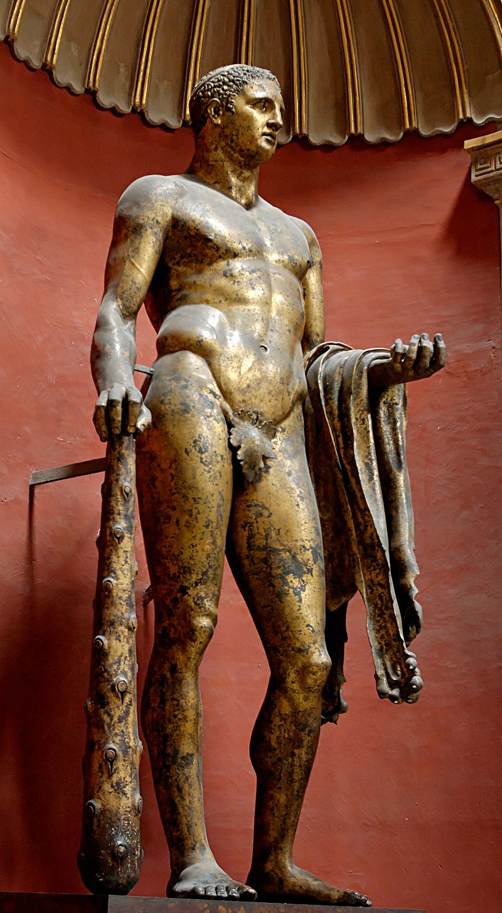

Mythology
Birth and early life
In Roman mythology, although Hercules was seen as the champion of the weak and a great protector, his personal problems started at birth. Juno sent two witches to prevent the birth, but they were tricked by one of Alcmene's servants and sent to another room. Juno then sent serpents to kill him in his cradle, but Hercules strangled them both. In one version of the myth, Alcmene abandoned her baby in the woods in order to protect him from Juno's wrath, but he was found by the goddess Minerva who brought him to Juno, claiming he was an orphan child left in the woods who needed nourishment. Juno suckled Hercules at her own breast until the infant bit her nipple, at which point she pushed him away, spilling her milk across the night sky and so forming the Milky Way. She then gave the infant back to Minerva and told her to take care of the baby herself. In feeding the child from her own breast, the goddess inadvertently imbued him with further strength and power.The 12 Labours
- Slay the Nemean Lion.
- Slay the nine-headed Lernaean Hydra.
- Capture the Golden Hind of Artemis.
- Capture the Erymanthian Boar.
- Clean the Augean stables in a single day.
- Slay the Stymphalian Birds.
- Capture the Cretan Bull.
- Steal the Mares of Diomedes.
- Obtain the girdle of Hippolyta, Queen of the Amazons.
- Obtain the cattle of the monster Geryon.
- Steal the apples of the Hesperides.
- Capture and bring back Cerberus.
Side adventures
Hercules had a greater number of "deeds on the side" (parerga) that have been popular subjects for art, including:
Killing a fire-breathing Cacus (Sebald Beham, 1545)
Holding up the sky for Atlas (based on Heinrich Aldegrever, 1550)
Wrestling with Achelous (16th-century plaque)
Fighting the giant Antaeus (Auguste Couder, 1819)

Retrieving Alcestis from the underworld (Paul Cézanne, 1867)
Freeing Prometheus (Christian Griepenkerl, 1878)
Hercules fighting the Nemean lion by Peter Paul Rubens

Hercules and the Hydra (c. 1475) by Antonio del Pollaiuolo; the hero wears his characteristic lionskin and wields a club
Hercules capturing the Erymanthian Boar, by J.M. Félix Magdalena (b. 1941)
The infant Hercules (Heracles) strangling the snakes sent by the goddess Hera (a woman protects Iphikles on the right); detail from an Attic red-figured stamnos from Vulci, Etruria, Italy, c. 480–470 BCE
Hercules supports the sky so that Atlas will bring him the golden apples of the Hesperides by J. M. Félix Magdalena
The Latin name Hercules was borrowed through Etruscan, where it is represented variously as Heracle, Hercle, and other forms. Hercules was a favorite subject for Etruscan art, and appears often on bronze mirrors. The Etruscan form Herceler derives from the Greek Heracles via syncope. A mild oath invoking Hercules (Hercule! or Mehercle!) was a common interjection in Classical Latin.[5]
Hercules had a number of myths that were distinctly Roman. One of these is Hercules' defeat of Cacus, who was terrorizing the countryside of Rome. The hero was associated with the Aventine Hill through his son Aventinus. Mark Antony considered him a personal patron god, as did the emperor Commodus. Hercules received various forms of religious veneration, including as a deity concerned with children and childbirth, in part because of myths about his precocious infancy, and in part because he fathered countless children. Roman brides wore a special belt tied with the "knot of Hercules", which was supposed to be hard to untie.[6] The comic playwright Plautus presents the myth of Hercules' conception as a sex comedy in his play Amphitryon; Seneca wrote the tragedy Hercules Furens about his bout with madness. During the Roman Imperial era, Hercules was worshipped locally from Hispania through Gaul.
German association
Tacitus records a special affinity of the Germanic peoples for Hercules. In chapter 3 of his Germania, Tacitus states:
... they say that Hercules, too, once visited them; and when going into battle, they sang of him first of all heroes. They have also those songs of theirs, by the recital of this barditus[7] as they call it, they rouse their courage, while from the note they augur the result of the approaching conflict. For, as their line shouts, they inspire or feel alarm.
Some have taken this as Tacitus equating the Germanic Þunraz with Hercules by way of interpretatio romana.[8]
In the Roman era Hercules' Club amulets appear from the 2nd to 3rd century, distributed over the empire (including Roman Britain, c.f. Cool 1986), mostly made of gold, shaped like wooden clubs. A specimen found in Köln-Nippes bears the inscription "DEO HER[culi]", confirming the association with Hercules.
In the 5th to 7th centuries, during the Migration Period, the amulet is theorized to have rapidly spread from the Elbe Germanic area across Europe. These Germanic "Donar's Clubs" were made from deer antler, bone or wood, more rarely also from bronze or precious metals. The amulet type is replaced by the Viking Age Thor's hammer pendants in the course of the Christianization of Scandinavia from the 8th to 9th century.
After the Roman Empire became Christianized, mythological narratives were often reinterpreted as allegory, influenced by the philosophy of late antiquity. In the 4th century, Servius had described Hercules' return from the underworld as representing his ability to overcome earthly desires and vices, or the earth itself as a consumer of bodies.[9] In medieval mythography, Hercules was one of the heroes seen as a strong role model who demonstrated both valor and wisdom, while the monsters he battles were regarded as moral obstacles.[10] One glossator noted that when Hercules became a constellation, he showed that strength was necessary to gain entrance to Heaven.[11]
Medieval mythography was written almost entirely in Latin, and original Greek texts were little used as sources for Hercules' myths.
The Renaissance and the invention of the printing press brought a renewed interest in and publication of Greek literature. Renaissance mythography drew more extensively on the Greek tradition of Heracles, typically under the Romanized name Hercules, or the alternate name Alcides. In a chapter of his book Mythologiae (1567), the influential mythographer Natale Conti collected and summarized an extensive range of myths concerning the birth, adventures, and death of the hero under his Roman name Hercules. Conti begins his lengthy chapter on Hercules with an overview description that continues the moralizing impulse of the Middle Ages:
Hercules, who subdued and destroyed monsters, bandits, and criminals, was justly famous and renowned for his great courage. His great and glorious reputation was worldwide, and so firmly entrenched that he'll always be remembered. In fact the ancients honored him with his own temples, altars, ceremonies, and priests. But it was his wisdom and great soul that earned those honors; noble blood, physical strength, and political power just aren't good enough.[12]
In 1600, the citizens of Avignon bestowed on Henry of Navarre (the future King Henry IV of France) the title of the Hercule Gaulois ("Gallic Hercules"), justifying the extravagant flattery with a genealogy that traced the origin of the House of Navarre to a nephew of Hercules' son Hispalus.[13]
Road of Hercules
The Road of Hercules is a route across Southern Gaul that is associated with the path Hercules took during his 10th labor of retrieving the Cattle of Geryon from the Red Isles.[14] Hannibal took the same path on his march towards Italy and encouraged the belief that he was the second Hercules.[14] Primary sources often make comparisons between Hercules and Hannibal.[14] Hannibal further tried to invoke parallels between himself and Hercules by starting his march on Italy by visiting the shrine of Hercules at Gades. While crossing the alps, he performed labors in a heroic manner. A famous example was noted by Livy, when Hannibal fractured the side of a cliff that was blocking his march.[14]
Worship from women
In ancient Roman society women were usually limited to two types of cults: those that addressed feminine matters such as childbirth, and cults that required virginal chastity.[15] However, there is evidence suggesting there were female worshippers of Apollo, Mars, Jupiter, and Hercules.[15] Some scholars believe that women were completely prohibited from any of Hercules's cults. Others believe it was only the "Ara Maxima" at which they were not allowed to worship.[15] Macrobius in his first book of Saturnalia paraphrases from Varro: "For when Hercules was bringing the cattle of Geryon through Italy, a woman replied to the thirsty hero that she could not give him water because it was the day of the Goddess Women and it was unlawful for a man to taste what had been prepared for her. Hercules, therefore, when he was about to offer a sacrifice forbid the presence of women and ordered Potitius and Pinarius who where in charge of his rites, not to allow any women from taking part".[15] Macrobius states that women were restricted in their participation in Hercules cults, but to what extent remains ambiguous. He mentions that women were not allowed to participate in Sacrum which is general term used to describe anything that was believed to have belonged to the gods. This could include anything from a precious item to a temple. Due to the general nature of a Sacrum, we can not judge the extent of the prohibition from Macrobius alone.[15] There are also ancient writings on this topic from Aulus Gellius when speaking on how Romans swore oaths. He mentioned that Roman women do not swear on Hercules, nor do Roman men swear on Castor.[15] He went on to say that women refrain from sacrificing to Hercules.[15] Propertius in his poem 4.9 also mentions similar information as Macrobius. This is evidence that he was also using Varro as a source.[15]
Worship in myth
There is evidence of Hercules worship in myth in the Latin epic poem, the Aeneid. In the 8th book of the poem Aeneas finally reaches the future site of Rome, where he meets Evander and the Arcadians making sacrifices to Hercules on the banks of the Tiber river.[16] They share a feast, and Evander tells the story of how Hercules defeated the monster Cascus, and describes him as a triumphant hero.[16] Translated from the Latin text of Vergil, Evander stated: "Time brought to us in our time of need the aid and arrival of a god. For there came that mightiest avenger, the victor Hercules, proud with the slaughter and the spoils of threefold Geryon, and he drove the mighty bulls here, and the cattle filled both valley and riverside.[16]
Hercules was also mentioned in the Fables of Gaius Julius Hyginus. For example, in his fable about Philoctetes he tells the story of how Philoctetes built a funeral pyre for Hercules so his body could be consumed and raised to immortality.[17]
Hercules and the Roman triumph
According to Livy (9.44.16) Romans were commemorating military victories by building statues to Hercules as early as 305 BCE. Also, philosopher Pliny the Elder dates Hercules worship back to the time of Evander, by accrediting him with erecting a statue in the Forum Boarium of Hercules.[18] Scholars agree that there would have been 5–7 temples in Augustan Rome.[18] There are believed to be related Republican triumphatores, however, not necessarily triumphal dedications. There is two temples located in the Campus Martius. One, being the Temple of Hercules Musarum, dedicated between 187 and 179 BCE by M. Fulvius Nobilior.[18] And the other being the Temple of Hercules Custos, likely renovated by Sulla in the 80s BCE.[18]
In art
In Roman works of art and in Renaissance and post-Renaissance art, Hercules can be identified by his attributes, the lion skin and the gnarled club (his favorite weapon); in mosaic he is shown tanned bronze, a virile aspect.[19]
In the twentieth century, the Farnese Hercules has inspired artists such as Jeff Koons, Matthew Darbyshire and Robert Mapplethorpe to reinterpret Hercules for new audiences.[20] The choice of deliberately white materials by Koons and Darbyshire has been interpreted as perpetuation of colourism in how the classical world is viewed.[20] Mapplethorpe's work with black model Derrick Cross can be seen as a reaction to neo-classical colourism, resisting the portrayal of Hercules as white.[20]
Roman era
-

Hercules of the Forum Boarium (Hellenistic, 2nd century BCE)
-
Hercules drunk and Omphale. Fresco from House of the Prince of Montenegro, Pompeii, 25–35 CE
-
Hercules carrying his son Hyllus looks at the centaur Nessus, who is about to carry Deianira across the river on his back. Fresco from Pompeii, 30–45 CE
-

Hercules in Olympus with Juno and Minerva, fresco from Herculaneum, 1st century CE
-
Hercules and Iolaus (1st century CE mosaic from the Anzio Nymphaeum, Rome)
-
Hercules (Hatra, Iraq, Parthian period, 1st–2nd century CE)
-
Hercules bronze statuette, 2nd century CE (museum of Alanya, Turkey)
-
Hercules and the Nemean Lion (detail), silver plate, 6th century (Cabinet des Médailles, Paris)
-
Heracles and Omphale, Roman fresco, Pompeian Fourth Style (45–79 CE), Naples National Archaeological Museum, Italy
-
A Roman gilded silver bowl depicting the boy Hercules strangling two serpents, from the Hildesheim Treasure, 1st century CE, Altes Museum
-
Head from statue of Herakles (Hercules) Roman 117–188 CE from villa of the emperor Hadrian at Tivoli, Italy at the British Museum
-
Hercules (Herakles) with the Apples of the Hesperides Roman 1st century CE from a temple at Byblos, Lebanon at the British Museum
-
Hercules from Cappadocia or Caesarea 1st century BCE – 1st century CE, Walters Art Museum
-
Hercules slaying the Hydra Roman copy of 4th century BCE original by Lysippos, Capitoline Museum
-
Hercules Roman 1st century BCE – 1st century CE, Walters Art Museum
-
Herakles and Telephos Louvre MR219
-
Hercules, 50 BCE – 50 CE, MAN Florence
Modern era
-
The Giant Hercules (1589) by Hendrik Goltzius
-

Lucas Faydherbe, Bust of Hercules – collection King Baudouin Foundation
-
The Drunken Hercules (1612–1614) by Rubens
-
Hercules and Deianira (18th century copy of a lost original), from I Modi
-

Hercules in the Augean stable (1842, Honoré Daumier)
-
Comic book cover (c. 1958)
-

Hercules, Deianira and the Centaur Nessus, by Bartholomäus Spranger, 1580–1582
-

Henry IV of France, as Hercules vanquishing the Lernaean Hydra (i.e. the Catholic League), by Toussaint Dubreuil, c. 1600. Louvre Museum
-
Hercules on the Pyre by Guillaume Coustou The Elder, 1704, Louvre MR1809
In numismatics
Hercules was among the earliest figures on ancient Roman coinage, and has been the main motif of many collector coins and medals since. One example is the Austrian 20 euro Baroque Silver coin issued on September 11, 2002. The obverse side of the coin shows the Grand Staircase in the town palace of Prince Eugene of Savoy in Vienna, currently the Austrian Ministry of Finance. Gods and demi-gods hold its flights, while Hercules stands at the turn of the stairs.
-

Juno, with Hercules fighting a Centaur on reverse (Roman, 215–15 BCE)
-
Club over his shoulder on a Roman denarius (c. 100 BCE)
-
Maximinus II and Hercules with club and lionskin (Roman, 313 CE)
-

Commemorative 5-franc piece (1996), Hercules in center
-
Hercules, as seen on a Denarius of the Roman Emperor Caracalla. Dated 212 CE
Military
Six successive ships of the British Royal Navy, from the 18th to the 20th century, bore the name HMS Hercules.
In the French Navy, there were no less than nineteen ships called Hercule, plus three more named Alcide which is another name of the same hero.
Hercules' name was also used for five ships of the US Navy, four ships of the Spanish Navy, four of the Argentine Navy and two of the Swedish Navy, as well as for numerous civilian sailing and steam ships.
In modern aviation a military transport aircraft produced by Lockheed Martin carries the title Lockheed C-130 Hercules.
Operation Herkules was the German code-name given to an abortive plan for the invasion of Malta during the Second World War.
Other cultural references
-
Pillars of Hercules, representing the Strait of Gibraltar (19th-century conjecture of the Tabula Peutingeriana)
-
.jpg)
The Cudgel of Hercules, a tall limestone rock formation, with Pieskowa Skała Castle in the background
-
Hercules as heraldic supporters in the royal arms of Greece, in use 1863–1973. The phrase "Ηρακλείς του στέμματος" ("Defenders of the Crown") has pejorative connotations ("chief henchmen") in Greek.
In films
A series of nineteen Italian Hercules movies were made in the late 1950s and early 1960s. The actors who played Hercules in these films were Steve Reeves, Gordon Scott, Kirk Morris, Mickey Hargitay, Mark Forest, Alan Steel, Dan Vadis, Brad Harris, Reg Park, Peter Lupus (billed as Rock Stevens) and Michael Lane. A number of English-dubbed Italian films that featured the name of Hercules in their title were not intended to be movies about Hercules.